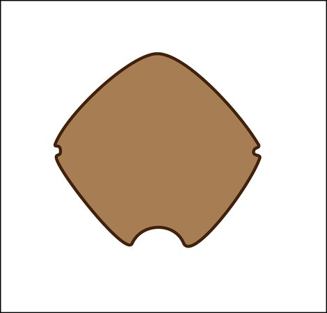

BROWN CYSTS
(1) SPHERICAL
 Protoperidiniumconicoides
Protoperidiniumconicoides |
 Brigantedinium spp.
Brigantedinium spp. |
 Protoperidiniumthulensense
Protoperidiniumthulensense |
(2) SPHERICAL WITH SPINES/PROCESSES
(2.1) HOLLOW PROCESSES
 Echinidiniumaculeatum
Echinidiniumaculeatum |
 Echinidiniumdelicatum
Echinidiniumdelicatum |
 Echinidiniumgranulatum
Echinidiniumgranulatum |
 Archaeperidiniumminutum
Archaeperidiniumminutum |
Archaeperidiniumsaanichi |
 Protoperidiniumfukuyoi
Protoperidiniumfukuyoi |
 Polykrikoshartmannii
Polykrikoshartmannii |
(2) SPHERICAL WITH SPINES/PROCESSES
(2.2) SOLID PROCESSES
 Echinidiniumzonneveldiae
Echinidiniumzonneveldiae |
 Islandiniumbrevispinosum
Islandiniumbrevispinosum |
 Islandinium?cezare
Islandinium?cezare |
 Diplopeltasymmetrica
Diplopeltasymmetrica |
 Niaacanthocysta
Niaacanthocysta |
|
 Qialebouriae
Qialebouriae |
(2) SPHERICAL WITH SPINES/PROCESSES
(2.3) TWO TYPES OF PROCESSES
 Echinidiniumbispiniformun
Echinidiniumbispiniformun |
 Protoperidiniummonospinum
Protoperidiniummonospinum |
 Peridiniumponticum
Peridiniumponticum |
(2) SPHERICAL WITH SPINES/PROCESSES
(2.4) APICULOCAVATE PROCESSES
 Protoperidiniumtricingulatum
Protoperidiniumtricingulatum |
 Islandiniumminutum
Islandiniumminutum |
 Echinidiniumsleipnerensis
Echinidiniumsleipnerensis |
 Echinidiniumkaraense
Echinidiniumkaraense |
 Islandinium?cezare
Islandinium?cezare |
 Protoperidiniumlewisiae
Protoperidiniumlewisiae |
 Archaeperidiniumbailongense
Archaeperidiniumbailongense |
 Archaeperidiniumconstrictum
Archaeperidiniumconstrictum |
(3) PERIDINIOIDS
(3.1) NO SPINES NOR PROCESSES
|  |
 Leipokatiuminvisitatum
Leipokatiuminvisitatum |
 Lejeunecystaoliva
Lejeunecystaoliva |
 Lejeunecystasabrinum
Lejeunecystasabrinum |
 Quinquecuspisconcreta
Quinquecuspisconcreta |
 Lejeunecystaparatenella
Lejeunecystaparatenella |
 Selenopemphixnephroides
Selenopemphixnephroides |
 Selenopemphixantarctica
Selenopemphixantarctica |
 Votadiniumcalvum
Votadiniumcalvum |
 Stelladiniumrobustum
Stelladiniumrobustum |
 Selenopemphixundulata
Selenopemphixundulata |
(3) PERIDINIOIDS
(3.2) WITH SPINES OR PROCESSES
 Stelladiniumstellatum
Stelladiniumstellatum |
 Selenopemphixquanta
Selenopemphixquanta |
 Votadiniumspinosum
Votadiniumspinosum |
 Xandarodiniumxanthum
Xandarodiniumxanthum |
 Selenopemphixbrevispinosum
Selenopemphixbrevispinosum |
 Peridiniumponticum
Peridiniumponticum |
(4) ELONGATE
 Polykrikosschwartzii
Polykrikosschwartzii |
 Polykrikoskofoidii
Polykrikoskofoidii |
 Polykrikosquadratus
Polykrikosquadratus |
 Gymnodiniumtrapeziforme
Gymnodiniumtrapeziforme |
(5) SPHERICAL DOUBLE WALL OR RETICULATION OR TABULATION
(5.1) DOUBLE WALL AND APICAL ARCHEOPYLE
 Protoperidiniumamericanum
Protoperidiniumamericanum |
 Protoperidiniumparthenopes
Protoperidiniumparthenopes |
(5) SPHERICAL DOUBLE WALL OR RETICULATION OR TABULATION
(5.2) TABULATION IN FORM OF SEPTA
 Cryodiniummeridianum
Cryodiniummeridianum |
 Dubridiniumcaperatum
Dubridiniumcaperatum |
(5) SPHERICAL DOUBLE WALL OR RETICULATION OR TABULATION
(5.3) RETICULATE WALL
 |
 Gymnodiniumcatenatum
Gymnodiniumcatenatum |
 Gymnodiniummicroreticulatum
Gymnodiniummicroreticulatum |
 Gymnodiniumnolleri
Gymnodiniumnolleri |
 Gymnodiniumtrapeziforme
Gymnodiniumtrapeziforme |